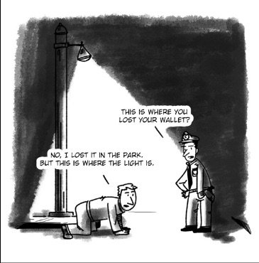

--Thich Nhat Hanh
"Whatever you do to be free from the self also is a self-centred activity."
--UG Krishnamurti
The Mind-Tickler is officially five years old this week.
Five years of trotting out the spirituality discourse every week. 260+ Tuesdays of take-no-prisoners tickling of the ol’ mind. (you can find a lot of them here)
Not surprisingly, they’ve evolved over that time. As things do. They’ve become sharper and more hard-edged.
Like machetes.
Five years of using the everyday as a way to cut through and integrate all that spiritual understanding you’ve been gathering for so long.
Ticklers about enlightenment, self/no-self, reacting and minding what happens. Ticklers about surrender, acceptance, free will, fear, validation, going inward, bypassing, missing out. Ticklers about reality, consciousness, thought, mind, suffering, motivation. About relationships, personality, money, health, death. About identity, humanness, imperfectness, specialness, spiritual scene-ness…
Whew. I need a nap.
Mostly The Mind-Tickler has tried to save you a lifetime of chasing a myth that that can only bring disappointment and failure.
Even though it’s been sort of like being Sisyphus.
Because your fascination with what you think you don't have, is endless.
Let’s face it, there’s always a sense of something not right, something not good enough, something not there. Always a sense of wrongness, not okayness, and needing to be better.
In you.
That sense of missing wholeness has sent you to compulsively read every book, hear every podcast, and quote every wise, Look-What-They-Have-But-I-Don’t person out there.
Even though the wholeness, the garden, the rightness being sought - has never actually been in the retreats and podcasts.
Looking for years, decades, lifetimes- and it’s not in there. You still don’t seem to find.
As if denied the lollipop others get to eat.
Making you want the lollipop all the more.
Though logically we can see this makes no sense. Because focus on any lack, and you're focusing on what isn’t there.
As opposed to focusing on what is.
So of course you don’t find. Because, isn't there.
Much like that old joke about looking for one’s keys where the light is better rather than where they were lost.
OK but still, maybe if you could just get this magic, you’ll finally really have gotten something. And then you can rest and be happy.
Because of course you're certain it can be gotten. How? Because those ever-so-helpful teachers, those Masters (such a special name for folks who supposedly know they don’t exist,) those special magic-holders who have what you don’t- they all say they have it.
Which means it can be gotten. Which perpetuates the sense that there’s something wrong with you.
Keeping the sense of self going.
The opposite of seeing through or disillusioning or waking up from the illusion of self.
Thanks, sage Masters!
But come on. No Don’t-Know for them. They absolutely do know!
How? Well, they say so. Because of their “personal experience.”
Yknow, that highly vaunted, never skewed, completely trustable sieve which only lets in…
what perpetuates and confirms said sieve.
I mean, even the phrase “personal experience” includes the word “personal.”
Belying the whole point of seeing through the self. Because if it’s personal, it’s individual. If it’s individual, it’s two (or more), and that is
not one.
So instead, wouldn’t it be something if we approached this personal-experience idea slightly differently.
Wouldn’t it be something if we could get truly personal- and notice that without us, without our sensing apparatuses such as our eyes, our ears - noticing and being aware of awareness and consciousness is not possible.
It is not possible without us. Without these persons. Without you.
Without you, there is no one to be aware, no one to be conscious, no one to be enlightened.
Awareness depends on you to be known.
Which is different from awareness depending on you to exist. I mean, whatever it is, it’s here whether you know it, realize it, understand it, attain it, or not.
Here. You already have it.
Now, I know you don’t believe the 5-years ancient Mind-Tickler about this.
And that’s fine. Awareness doesn’t need you to get it.
So instead, try starting here: Show me where you end and awareness begins. Show me where sound ends and hearing begins. Show me where the great wisdom stops, holding itself away, from wherever it is that lacking-you, starts.
I’m pretty sure that’ll keep you busy till next Tuesday, when next week’s Tickler will attempt once again to help you see what you already have.
And we’ll see you,
Where ever that begins and ends,
there.
to subscribe and get your Mind-Tickled every week.
"You wander from room to room hunting for the diamond necklace
that is already around your neck."
--Rumi
